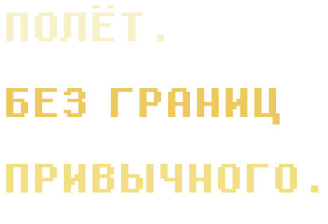
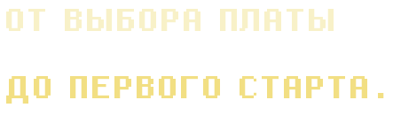

01CORE
Ориентация EKF3 без GPS
Горизонт держится без GPS, в том числе после бочек, вращений и шторма. В часовом SITL-полёте (модель 7,2 кг) ошибка горизонта EKF3 — 1,6° RMS, в бочках и вращениях 2,1°; у обычного DCM — 17,8° и 38,9°.
SITL · 1 HOUR ↗
A.T.L.A.S. 2.0 — модификация ArduPlane 4.7.2 с EKF3 NoAID G.L.O.B.A.L.: ориентация и позиция без GPS, автоматический переход на спутники и обратно, старт без GPS и протокол П.Р.И.К.А.З. Веб-конфигуратор поддерживает USB/MAVLink, Quick Setup, параметры, калибровки и профиль активации G.L.O.B.A.L. Защищённые сборки для Matek H743-WING V3, Cube Orange Plus и Uni-IC743 Mini публикуются в каталоге; версия каждого файла указана в карточке платы.
01 / FLIGHT INTELLIGENCE
Основные возможности A.T.L.A.S. 2.0.
Горизонт держится без GPS, в том числе после бочек, вращений и шторма. В часовом SITL-полёте (модель 7,2 кг) ошибка горизонта EKF3 — 1,6° RMS, в бочках и вращениях 2,1°; у обычного DCM — 17,8° и 38,9°.
SITL · 1 HOUR ↗Старт без спутников: прошивка сама распознаёт бросок или катапульту по ускорению, подтверждает движение примерно через секунду и ведёт самолёт в набор высоты. GPS при старте не нужен.
TAKEOFF ↗EKF3 NoAID G.L.O.B.A.L.: когда GPS появляется и держится 5 секунд, позиция сама следует за ним; при потере GPS на 3 секунды EKF3 возвращается на счисление, а AHRS остаётся на EKF3. Без GPS позиция на карте считается по счислению, метка GPS показывается отдельно. В SITL позиция вернулась к спутникам за 5,5 с.
NOAID AUTO ↗Ограничения крена, тангажа и руля направления в FBWA по текущей оценке AHRS. Включается тумблером RC или из конфигуратора и не запускает буст. Рядом с ним в конфигураторе есть профиль активации EKF3 G.L.O.B.A.L.
ORDER · G.L.O.B.A.L. ↗02 / FIRMWARE DISTRIBUTION

В каталоге опубликованы проверенные сборки для поддерживаемых плат. Для каждого файла указаны версия и SHA-256; скачивание защищено PIN, а целостность проверяется автоматически.
GitHub Releases ↗ · Deployment / Integrations
Не видишь своей платы? Не прошивай сборку для другой аппаратной ревизии. Совместимость зависит от target/hwdef, загрузчика и распиновки.
03 / DEPLOYMENT GUIDE

Не пропускай проверку аппаратной ревизии и резервное копирование параметров. Прошивка управляет реальными исполнительными механизмами.
Найди точную модель и ревизию полётного контроллера. Название должно совпадать со сборкой.
Экспортируй параметры и проверь инструкции по совместимости. Не переноси вслепую конфигурацию из другой версии.
Используй совместимый загрузчик и режим установки прошивки в Mission Planner. Проводить настройку — без пропеллера.
Проверь датчики, рули, направления, failsafe и режимы в SITL и на земле прежде, чем рассматривать полёт.
IMPORTANT / SAFETY NOTICE
Файлы прошивок проверены по формату и контрольным суммам; это не заменяет испытаний на конкретном контроллере и самолёте. Полная запись STM32 ROM DFU стирает загрузчик и требует возможности восстановления. При полёте без GPS учитывай дрейф оценки положения и проверяй failsafe.
05 / SUPPORT A.T.L.A.S.
A.T.L.A.S. развивается благодаря работе авторов и поддержке сообщества. Добровольные пожертвования помогают продолжать разработку, проводить испытания и выпускать новые версии прошивки.
Добровольное пожертвование. Не требуется для участия в раннем тестировании.
Участие в программе раннего тестирования добровольное. Заполните заявку и укажите подходящий контроллер. Пожертвования не обязательны и не дают автоматического доступа к закрытым прошивкам.
После подачи заявки разработчик проверяет её вручную. Донат не обязателен.
Как используются ваши данныеПриглашения зависят от готовности сборки, доступных мест и требований безопасности. Участие не означает гарантированного доступа к каждой тестовой версии. Получатели прошивки сохраняют права, предусмотренные GNU GPL.
04 / OPEN DEVELOPMENT
Актуальная версия A.T.L.A.S. — 2.0 (A.T.L.A.S-G.L.O.B.A.L). Её изменения описаны в истории релизов; доступные файлы для каждой платы указаны в каталоге сборок. Исходный репозиторий разработчика не публикуется; для распространяемых сборок соответствующие исходники должны быть доступны отдельно согласно GNU GPL.
Lead developer: Oleksandr · AI copilot: CODEX
$ atlas info
PROJECT A.T.L.A.S.
BASE ArduPlane 4.7.2
LICENSE GPL-3.0-or-later *
CHANNEL release 2.0
LEAD Oleksandr
AI CODEX
_
* GNU GPLv3: при публичной раздаче HEX необходимо обеспечить соответствующие исходники именно этой версии сборки. Закрытый служебный репозиторий не заменяет доступ к исходникам для получателей прошивки.